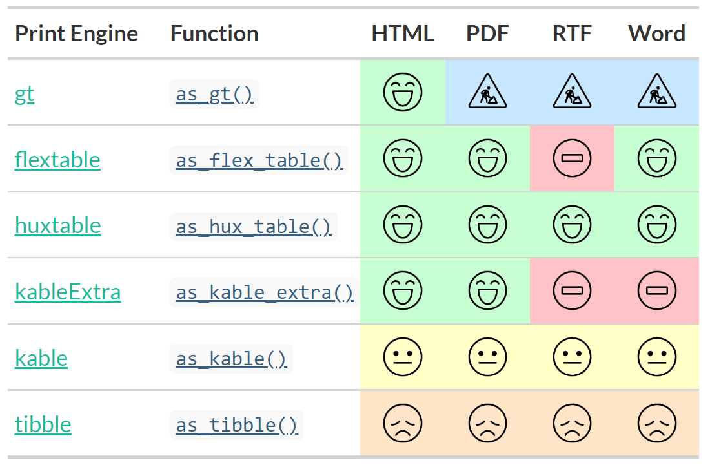
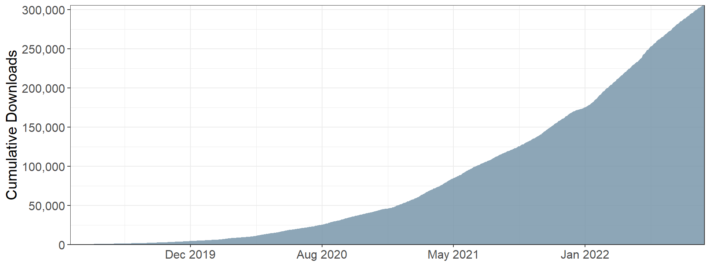
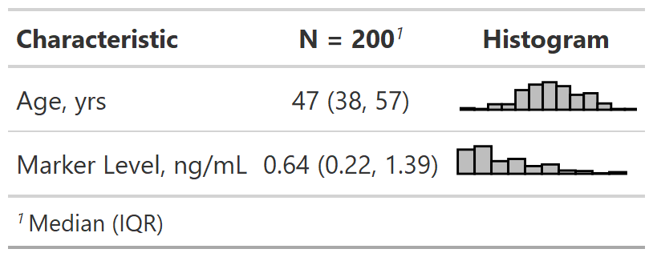

library(gtsummary)
library(tidyverse)
head(trial) |> gt::gt()Clinical Reporting with {gtsummary}
Introduction
Acknowledgements

This work is licensed under a Creative Commons Attribution-ShareAlike 4.0 International License (CC BY-SA4.0).
Daniel D. Sjoberg
Checklist
Install recent R release
Current version 4.2.1Install RStudio
I am on version 2022.07.1+554 Install packages
install.packages(c("gtsummary", "tidyverse", "labelled", "usethis", "causaldata", "skimr"))Ensure you can knit Rmarkdown files
Questions
Please add any questions to the public Zoom chat.
Shannon and Karissa will monitor the chat
We’ll also have time for questions at the break and at the end

Motivation
Reproducibility Crisis
Quality of medical research is often low
Low quality code in medical research part of the problem
Low quality code is more likely to contain errors
Reproducibility is often cumbersome and time-consuming

{gtsummary} overview
- Create tabular summaries with sensible defaults but highly customizable
- Types of summaries:
- “Table 1”-types
- Cross-tabulation
- Regression models
- Survival data
- Survey data
- Custom tables
- Report statistics from {gtsummary} tables inline in R Markdown
- Stack and/or merge any table type
- Use themes to standardize across tables
- Choose from different print engines
Example Dataset
The
trialdata set is included with {gtsummary}Simulated data set of baseline characteristics for 200 patients who receive Drug A or Drug B
Variables were assigned labels using the
labelledpackage
Example Dataset
This presentation will use a subset of the variables.
sm_trial <-
trial |>
select(trt, age, grade, response)Exercise 1
As an exercise, we’ll prepare data, data summaries, analyses, and a brief write-up of the results.
Download zip file with exercises with this link.
Extract the zip file locally and open in an RStudio project. You can unzip the file with your system utilities, or with
zip::unzip(). Unzip the files into their own folder!Add variable labels to the data frame using
labelled::set_variable_labels().
08:00
tbl_summary()
Basic tbl_summary()
sm_trial |>
select(-trt) |>
tbl_summary()| 1 Median (IQR); n (%) |
Four types of summaries:
continuous,continuous2,categorical, anddichotomousStatistics are
median (IQR)for continuous,n (%)for categorical/dichotomousVariables coded
0/1,TRUE/FALSE,Yes/Notreated as dichotomousLists
NAvalues under “Unknown”Label attributes are printed automatically
Customize tbl_summary() output
tbl_summary(
sm_trial,
by = trt,
)| 1 Median (IQR); n (%) |
by: specify a column variable for cross-tabulation
Customize tbl_summary() output
tbl_summary(
sm_trial,
by = trt,
type = age ~ "continuous2",
)| 1 n (%) |
by: specify a column variable for cross-tabulationtype: specify the summary type
Customize tbl_summary() output
tbl_summary(
sm_trial,
by = trt,
type = age ~ "continuous2",
statistic =
list(
age ~ c("{mean} ({sd})",
"{min}, {max}"),
response ~ "{n} / {N} ({p}%)"
),
)| 1 n (%); n / N (%) |
by: specify a column variable for cross-tabulationtype: specify the summary typestatistic: customize the reported statistics
Customize tbl_summary() output
tbl_summary(
sm_trial,
by = trt,
type = age ~ "continuous2",
statistic =
list(
age ~ c("{mean} ({sd})",
"{min}, {max}"),
response ~ "{n} / {N} ({p}%)"
),
label =
grade ~ "Pathologic tumor grade",
)| 1 n (%); n / N (%) |
by: specify a column variable for cross-tabulationtype: specify the summary typestatistic: customize the reported statistics
label: change or customize variable labels
Customize tbl_summary() output
tbl_summary(
sm_trial,
by = trt,
type = age ~ "continuous2",
statistic =
list(
age ~ c("{mean} ({sd})",
"{min}, {max}"),
response ~ "{n} / {N} ({p}%)"
),
label =
grade ~ "Pathologic tumor grade",
digits = age ~ 1
)| 1 n (%); n / N (%) |
by: specify a column variable for cross-tabulationtype: specify the summary typestatistic: customize the reported statistics
label: change or customize variable labelsdigits: specify the number of decimal places for rounding
{gtsummary} + formulas

Named list are OK too! label = list(age = "Patient Age")
Add-on functions in {gtsummary}
tbl_summary() objects can also be updated using related functions.
add_*()add additional column of statistics or information, e.g. p-values, q-values, overall statistics, treatment differences, N obs., and moremodify_*()modify table headers, spanning headers, footnotes, and morebold_*()/italicize_*()style labels, variable levels, significant p-values
Update tbl_summary() with add_*()
| 1 Median (IQR); n (%) | ||||
| 2 Wilcoxon rank sum test; Pearson’s Chi-squared test | ||||
| 3 False discovery rate correction for multiple testing |
add_p(): adds a column of p-valuesadd_q(): adds a column of p-values adjusted for multiple comparisons through a call top.adjust()
Update tbl_summary() with add_*()
add_overall(): adds a column of overall statistics
Update tbl_summary() with add_*()
| 1 Median (IQR); n (%) |
add_overall(): adds a column of overall statisticsadd_n(): adds a column with the sample size
Update tbl_summary() with add_*()
sm_trial |>
tbl_summary(
by = trt,
missing = "no"
) |>
add_overall() |>
add_n() |>
add_stat_label(
label = all_categorical() ~ "No. (%)"
) add_overall(): adds a column of overall statisticsadd_n(): adds a column with the sample sizeadd_stat_label(): adds a description of the reported statistic
Update with bold_*()/italicize_*()
sm_trial |>
tbl_summary(
by = trt
) |>
add_p() |>
bold_labels() |>
italicize_levels() |>
bold_p(t = 0.8)| 1 Median (IQR); n (%) | |||
| 2 Wilcoxon rank sum test; Pearson’s Chi-squared test |
bold_labels(): bold the variable labelsitalicize_levels(): italicize the variable levelsbold_p(): bold p-values according a specified threshold
Update tbl_summary() with modify_*()
tbl <-
sm_trial |>
tbl_summary(by = trt,
missing = "no") |>
modify_header(
stat_1 ~ "**Group A**",
stat_2 ~ "**Group B**"
) |>
modify_spanning_header(
all_stat_cols() ~ "**Drug**") |>
modify_footnote(
all_stat_cols() ~
paste("median (IQR) for continuous;",
"n (%) for categorical")
)
tbl| 1 median (IQR) for continuous; n (%) for categorical | ||
- Use
show_header_names()to see the internal header names available for use inmodify_header()
Column names
show_header_names(tbl)| Column Name | Column Header |
|---|---|
| label | Characteristic |
| stat_1 | Group A |
| stat_2 | Group B |
all_stat_cols() selects columns "stat_1" and "stat_2"
Exercise 2
Create a summary table split by whether or not the participant quit smoking or not.
Include all variables in the table except the study outcome: death.
Consider using gtsummary functions that
add_*(),modify_*()or style your summary table.tbl_summary()tutorial for reference: https://www.danieldsjoberg.com/gtsummary/articles/tbl_summary.html
08:00
Update tbl_summary() with add_*()
trial |>
select(trt, marker, response) |>
tbl_summary(
by = trt,
statistic = list(marker ~ "{mean} ({sd})",
response ~ "{p}%"),
missing = "no"
) |>
add_difference()| 1 Mean (SD); % | |||||
| 2 Welch Two Sample t-test; Two sample test for equality of proportions | |||||
| 3 CI = Confidence Interval |
add_difference(): mean and rate differences between two groups. Can also be adjusted differences
Update tbl_summary() with add_*()
Add-on functions in {gtsummary}
And many more!
See the documentation at http://www.danieldsjoberg.com/gtsummary/reference/index.html
And a detailed tbl_summary() vignette at http://www.danieldsjoberg.com/gtsummary/articles/tbl_summary.html
Cross-tabulation with tbl_cross()
tbl_cross() is a wrapper for tbl_summary() for n x m tables
sm_trial |>
tbl_cross(
row = trt,
col = grade,
percent = "row",
margin = "row"
) |>
add_p(source_note = TRUE) |>
bold_labels()| Pearson’s Chi-squared test, p=0.9 | |||
Continuous Summaries with tbl_continuous()
tbl_continuous() summarizes a continuous variable by 1, 2, or more categorical variables
sm_trial |>
tbl_continuous(
variable = age,
by = trt,
include = grade
)| 1 Age: Median (IQR) |
Survey data with tbl_svysummary()
survey::svydesign(
ids = ~1,
data = as.data.frame(Titanic),
weights = ~Freq
) |>
tbl_svysummary(
by = Survived,
include = c(Class, Sex)
) |>
add_p() |>
modify_spanning_header(
all_stat_cols() ~ "**Survived**")| 1 n (%) | |||
| 2 chi-squared test with Rao & Scott’s second-order correction | |||
Survival outcomes with tbl_survfit()
library(survival)
fit <- survfit(Surv(ttdeath, death) ~ trt, trial)
tbl_survfit(
fit,
times = c(12, 24),
label_header = "**{time} Month**"
) |>
add_p()| 1 Log-rank test |
Exercise 3
Is there a difference in death rates by smoking status?
Using
tbl_summary()report the death rates by smoking status.Add the (unadjusted) difference in death rates by smoking status using
add_difference().Produce a second table that reports an adjusted difference in death rates.
- The rate will be adjusted for all covariates in the data frame.
- Review the tests available at https://www.danieldsjoberg.com/gtsummary/reference/tests.html.
- Let me know if you’d like a hint as to which test to use. It’ll be one that takes advantage of
adj.vars.
08:00
tbl_regression()
Traditional model summary()
m1 <-
glm(
response ~ age + stage,
data = trial,
family = binomial(link = "logit")
)
Looks messy and it’s not easy to digest
Basic tbl_regression()
tbl_regression(m1)| 1 OR = Odds Ratio, CI = Confidence Interval |
Displays p-values for covariates
Shows reference levels for categorical variables
Model type recognized as logistic regression with odds ratio appearing in header
Customize tbl_regression() output
tbl_regression(
m1,
exponentiate = TRUE
) |>
add_global_p() |>
add_glance_table(
include = c(nobs,
logLik,
AIC,
BIC)
)| 1 OR = Odds Ratio, CI = Confidence Interval |
Display odds ratio estimates and confidence intervals
Add global p-values
Add various model statistics
Supported models in tbl_regression()
biglm::bigglm()biglmm::bigglm()brms::brm()cmprsk::crr()fixest::feglm()fixest::femlm()fixest::feNmlm()fixest::feols()gam::gam()geepack::geeglm()glmmTMB::glmmTMB()lavaan::lavaan()
lfe::felm()lme4::glmer()lme4::glmer.nb()lme4::lmer()MASS::glm.nb()MASS::polr()mgcv::gam()mice::mirannet::multinom()ordinal::clm()ordinal::clmm()parsnip::model_fit
plm::plm()rstanarm::stan_glm()stats::aov()stats::glm()stats::lm()stats::nls()survey::svycoxph()survey::svyglm()survey::svyolr()survival::clogit()survival::coxph()survival::survreg()tidycmprsk::crr()VGAM::vglm()
Custom tidiers can be written and passed to tbl_regression() using the tidy_fun= argument.
Exercise 4
Build a logistic regression model with death as the outcome. Include smoking and the other variables as covariates.
Summarize the logistic regression model with
tbl_regression().What modifications did you decide to make the the regression summary?
tbl_regression()- tutorial for reference: https://www.danieldsjoberg.com/gtsummary/articles/tbl_regression.html
08:00
Univariate models with tbl_uvregression()
tbl_uvreg <-
sm_trial |>
tbl_uvregression(
method = glm,
y = response,
method.args =
list(family = binomial),
exponentiate = TRUE
)
tbl_uvreg| 1 OR = Odds Ratio, CI = Confidence Interval |
Specify model
method,method.args, and theresponsevariableArguments and helper functions like
exponentiate,bold_*(),add_global_p()can also be used withtbl_uvregression()
Break

10:00
inline_text()
{gtsummary} reporting with inline_text()
Tables are important, but we often need to report results in-line.
Any statistic reported in a {gtsummary} table can be extracted and reported in-line in an R Markdown document with the
inline_text()function.The pattern of what is reported can be modified with the
pattern=argument.Default is
pattern = "{estimate} ({conf.level*100}% CI {conf.low}, {conf.high}; {p.value})"for regression summaries.
{gtsummary} reporting with inline_text()
| 1 OR = Odds Ratio, CI = Confidence Interval |
In Code: The odds ratio for age is `r inline_text(tbl_uvreg, variable = age)`
In Report: The odds ratio for age is 1.02 (95% CI 1.00, 1.04; p=0.10)
{gtsummary} reporting with inline_text()
gts_small_summary <-
trial %>%
tbl_summary(
by = trt,
include = marker,
missing = "no"
) %>%
add_difference()
gts_small_summary| 1 Median (IQR) | |||||
| 2 Welch Two Sample t-test | |||||
| 3 CI = Confidence Interval |
In Code:
- The median (IQR) marker among participants randomized to Drug A was
`r inline_text(gts_small_summary, variable = marker, column = 'Drug A')`. - The median (IQR) age among participants randomized to Drug A was
`r inline_text(gts_small_summary, variable = marker, column = 'Drug A', pattern = '{median}')`. - The difference in marker level was
`r inline_text(gts_small_summary, variable = marker, pattern = '{estimate} (95% {ci})')`.
In Report:
- The median (IQR) marker among participants randomized to Drug A was 0.84 (0.24, 1.57).
- The median (IQR) age among participants randomized to Drug A was 0.84.
- The difference in marker level was 0.20 (95% -0.05, 0.44).
Exercise 5
Write a brief summary of the results above using inline_text() to report values from the tables directly into the markdown report. You’ll likely need gtsummary::show_header_names().
Report at least one statistic from the cohort summary.
Report the difference in death rates.
Report the odds ratio for death from the multivariable logistic regression model.
08:00
tbl_merge()/tbl_stack()
tbl_merge() for side-by-side tables
A univariable table:
tbl_uvsurv <-
trial |>
select(age, grade, death, ttdeath) |>
tbl_uvregression(
method = coxph,
y = Surv(ttdeath, death),
exponentiate = TRUE
) |>
add_global_p()
tbl_uvsurv| 1 HR = Hazard Ratio, CI = Confidence Interval |
A multivariable table:
tbl_mvsurv <-
coxph(
Surv(ttdeath, death) ~ age + grade,
data = trial
) |>
tbl_regression(
exponentiate = TRUE
) |>
add_global_p()
tbl_mvsurv| 1 HR = Hazard Ratio, CI = Confidence Interval |
tbl_merge() for side-by-side tables
tbl_merge(
list(tbl_uvsurv, tbl_mvsurv),
tab_spanner = c("**Univariable**", "**Multivariable**")
)| 1 HR = Hazard Ratio, CI = Confidence Interval | |||||||
tbl_stack() to combine vertically
A univariable table:
tbl_uvsurv2 <-
coxph(Surv(ttdeath, death) ~ trt,
data = trial) |>
tbl_regression(
show_single_row = trt,
label = trt ~ "Drug B vs A",
exponentiate = TRUE
)
tbl_uvsurv2| 1 HR = Hazard Ratio, CI = Confidence Interval |
A multivariable table:
tbl_mvsurv2 <-
coxph(Surv(ttdeath, death) ~
trt + grade + stage + marker,
data = trial) |>
tbl_regression(
show_single_row = trt,
label = trt ~ "Drug B vs A",
exponentiate = TRUE,
include = "trt"
)
tbl_mvsurv2| 1 HR = Hazard Ratio, CI = Confidence Interval |
tbl_stack() to combine vertically
list(tbl_uvsurv2, tbl_mvsurv2) |>
tbl_stack(
group_header =
c("Unadjusted", "Adjusted")
)| Unadjusted | |||
| Adjusted | |||
| 1 HR = Hazard Ratio, CI = Confidence Interval |
tbl_strata() for stratified tables
sm_trial |>
mutate(grade = paste("Grade", grade)) |>
tbl_strata(
strata = grade,
~tbl_summary(.x, by = trt, missing = "no") |>
modify_header(all_stat_cols() ~ "**{level}**")
)| 1 Median (IQR); n (%) | ||||||
Define custom function tbl_cmh()

Define custom function tbl_cmh()

{gtreg} for regulatory submissions
The {gtreg} package uses {gtsummary} to construct tables for regulatory agencies.

gtreg::df_adverse_events |>
gtreg::tbl_ae(
id_df = gtreg::df_patient_characteristics,
id = patient_id,
ae = adverse_event,
soc = system_organ_class,
by = grade,
strata = trt
) |>
modify_header(gtreg::all_ae_cols() ~ "**Grade {by}**") |>
bold_labels(){gtsummary} themes
{gtsummary} theme basics
A theme is a set of customization preferences that can be easily set and reused.
Themes control default settings for existing functions
Themes control more fine-grained customization not available via arguments or helper functions
Easily use one of the available themes, or create your own
{gtsummary} default theme
reset_gtsummary_theme()
m1 |>
tbl_regression(
exponentiate = TRUE
) |>
modify_caption(
"Default Theme"
)| 1 OR = Odds Ratio, CI = Confidence Interval |
{gtsummary} theme_gtsummary_journal()
reset_gtsummary_theme()
theme_gtsummary_journal(journal = "jama")
m1 |>
tbl_regression(
exponentiate = TRUE
) |>
modify_caption(
"Journal Theme (JAMA)"
)| 1 OR = Odds Ratio, CI = Confidence Interval |
Contributions welcome!
{gtsummary} theme_gtsummary_language()
reset_gtsummary_theme()
theme_gtsummary_language(language = "zh-tw")
m1 |>
tbl_regression(
exponentiate = TRUE
) |>
modify_caption(
"Language Theme (Chinese)"
)| 1 OR=勝算比, CI=信賴區間 |
Language options:
- German
- English
- Spanish
- French
- Gujarati
- Hindi
- Icelandic
- Japanese
- Korean
- Marathi
- Dutch
- Norwegian
- Portuguese
- Swedish
- Chinese Simplified
- Chinese Traditional
{gtsummary} theme_gtsummary_compact()
reset_gtsummary_theme()
theme_gtsummary_compact()
tbl_regression(m1, exponentiate = TRUE) |>
modify_caption("Compact Theme")| 1 OR = Odds Ratio, CI = Confidence Interval |
Reduces padding and font size
{gtsummary} set_gtsummary_theme()
set_gtsummary_theme()to use a custom theme.See the {gtsummary} + themes vignette for examples
http://www.danieldsjoberg.com/gtsummary/articles/themes.html
{gtsummary} print engines
{gtsummary} print engines

{gtsummary} print engines
Use any print engine to customize table
In Closing
{gtsummary} website
{gtsummary} installation
Install production version from CRAN:
install.packages("gtsummary")Install development version from GitHub:
remotes::install_github("ddsjoberg/gtsummary")
{gtsummary} sandbox in {bstfun}
http://www.danieldsjoberg.com/bstfun/

 
Other Contributors
@ablack3, @ABorakati, @aghaynes, @ahinton-mmc, @aito123, @akarsteve, @akefley, @albertostefanelli, @alexis-catherine, @amygimma, @anaavu, @andrader, @angelgar, @arbet003, @arnmayer, @aspina7, @asshah4, @awcm0n, @barthelmes, @bcjaeger, @BeauMeche, @benediktclaus, @berg-michael, @bhattmaulik, @BioYork, @brachem-christian, @bwiernik, @bx259, @calebasaraba, @CarolineXGao, @ChongTienGoh, @Chris-M-P, @chrisleitzinger, @cjprobst, @clmawhorter, @CodieMonster, @coeus-analytics, @coreysparks, @ctlamb, @davidgohel, @davidkane9, @dax44, @dchiu911, @ddsjoberg, @DeFilippis, @denis-or, @dereksonderegger, @dieuv0, @discoleo, @djbirke, @dmenne, @ElfatihHasabo, @emilyvertosick, @ercbk, @erikvona, @eweisbrod, @feizhadj, @fh-jsnider, @ge-generation, @ghost, @gjones1219, @gorkang, @GuiMarthe, @hass91, @HichemLa, @hughjonesd, @iaingallagher, @ilyamusabirov, @IndrajeetPatil, @IsadoraBM, @j-tamad, @jalavery, @jeanmanguy, @jemus42, @jenifav, @jennybc, @JeremyPasco, @JesseRop, @jflynn264, @jjallaire, @jmbarajas, @jmbarbone, @JoanneF1229, @joelgautschi, @jojosgithub, @JonGretar, @jordan49er, @jthomasmock, @juseer, @jwilliman, @karissawhiting, @kendonB, @kmdono02, @kwakuduahc1, @lamhine, @larmarange, @leejasme, @loukesio, @lspeetluk, @ltin1214, @lucavd, @LuiNov, @maia-sh, @Marsus1972, @matthieu-faron, @mbac, @mdidish, @MelissaAssel, @michaelcurry1123, @mljaniczek, @moleps, @motocci, @msberends, @mvuorre, @myensr, @MyKo101, @oranwutang, @palantre, @Pascal-Schmidt, @pedersebastian, @perlatex, @philsf, @polc1410, @postgres-newbie, @proshano, @raphidoc, @RaviBot, @rich-iannone, @RiversPharmD, @rmgpanw, @roman2023, @ryzhu75, @sachijay, @saifelayan, @sammo3182, @sandhyapc, @sbalci, @sda030, @shannonpileggi, @shengchaohou, @ShixiangWang, @simonpcouch, @slb2240, @slobaugh, @spiralparagon, @StaffanBetner, @Stephonomon, @storopoli, @szimmer, @tamytsujimoto, @TarJae, @themichjam, @THIB20, @tibirkrajc, @tjmeyers, @tldrcharlene, @tormodb, @toshifumikuroda, @UAB-BST-680, @uakimix, @uriahf, @Valja64, @vvm02, @xkcococo, @yonicd, @yoursdearboy, @zabore, @zachariae, @zaddyzad, @zeyunlu, @zhengnow, @zlkrvsm, @zongell-star, and @Zoulf001.
Thank you